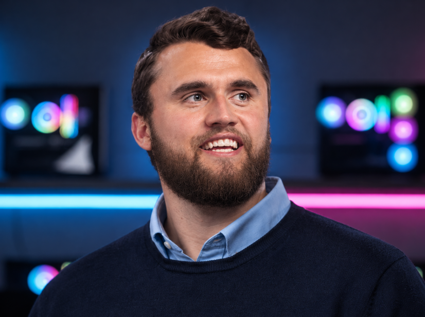

Welkom bij Level Up Hardware, de plek waar jouw gaming-dromen werkelijkheid worden. Als eigenaar en drijvende kracht achter deze zaak, is Daan meer dan alleen een ondernemer; hij is een gamer in hart en nieren en een absolute hardware-enthousiasteling.
Al sinds zijn tienerjaren, omringd door de gloed van CRT-schermen en de pulserende beat van synthwave, sleutelde Daan aan zijn eigen gaming-rigs. Wat begon als een hobby — het finetunen van elke component voor die extra frame per seconde, het optimaliseren van koelsystemen voor piekprestaties — groeide al snel uit tot een diepgewortelde passie.
Of je nu de grenzen van virtual reality verkent, in competitieverband strijdt om de hoogste rang, of gewoon wilt genieten van adembenemende singleplayer-avonturen: Daan en zijn team zorgen ervoor dat je hardware je nooit in de steek laat. Hij gelooft dat een perfect afgestelde machine het verschil maakt tussen gewoon gamen en écht domineren.
